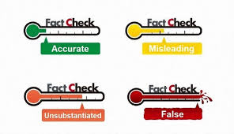

In a digital world where misinformation spreads rapidly, fact-checking organizations play a critical role in verifying claims, images, and videos. These organizations investigate viral content, analyze evidence, and provide conclusions based on verified data.
Understanding how fact-checkers work helps users evaluate information more effectively. Instead of blindly trusting or dismissing content, users can apply similar methods to verify accuracy and detect misleading narratives.
What is Fact-checking?
Fact-checking is the process of verifying the accuracy of information by examining evidence, sources, and context. It involves analyzing claims and determining whether they are true, false, misleading, or lacking sufficient evidence.
Professional fact-checking organizations follow structured methods to ensure that their conclusions are based on reliable and verifiable data.
Fact-checking is not about opinion—it is about evidence, verification, and transparency.
How Fact-checking Organizations Work
Organizations such as :contentReference[oaicite:0]{index=0} and :contentReference[oaicite:1]{index=1} follow systematic processes when evaluating claims
- Identify a viral claim, image, or video
- Trace the origin of the content
- Collect evidence from reliable and primary sources
- Consult experts or official statements when necessary
- Publish a conclusion with supporting explanation
Methods Used by Fact-checkers
1. Source Verification
Fact-checkers begin by identifying where the information came from. They prioritize primary sources such as official statements, original uploads, or direct evidence.

- Helps trace the original source of information
- Distinguishes between firsthand and secondary reports
- Reduces reliance on reposted or altered content
2. Media Verification Techniques
Fact-checkers use tools such as reverse image search, metadata analysis, and frame-by-frame video inspection to verify whether media has been manipulated or taken out of context.
- Detects reused or altered media
- Confirms original context and timeline
- Identifies possible AI-generated content
3. Claim Evaluation and Rating
After analyzing evidence, fact-checkers classify claims using rating systems such as true, false, misleading, or unverified. These ratings are supported by detailed explanations.

- Provides clear conclusions for readers
- Explains reasoning behind the rating
- Encourages transparency and accountability
Challenges in Fact-checking
Fact-checking is a complex process that faces several challenges, especially in fast-moving digital environments.
- Rapid spread of misinformation before verification is complete
- Limited access to original or primary sources
- Highly realistic AI-generated media
- Bias or selective interpretation of evidence
Why Fact-checking Matters
Fact-checking helps maintain accuracy and accountability in digital information. It prevents the spread of false claims and promotes informed decision-making.
By understanding how professional fact-checkers work, users can adopt similar strategies when evaluating content, making them less vulnerable to misinformation.
What We've Learned
Fact-checking organizations use structured and evidence-based methods to verify information. From source verification to media analysis and claim evaluation, each step is designed to ensure accuracy and transparency.
In an environment where misinformation and AI-generated content are increasingly common, fact-checking plays a vital role. By applying these methods, users can critically evaluate information and avoid being misled.
Do not rely on assumptions or viral popularity. Always verify claims using credible sources and evidence before accepting them as true.